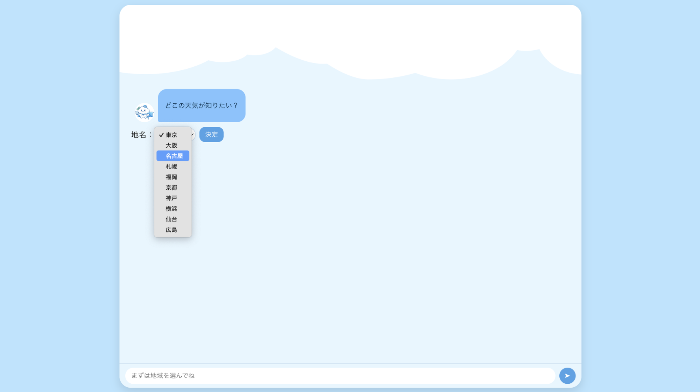
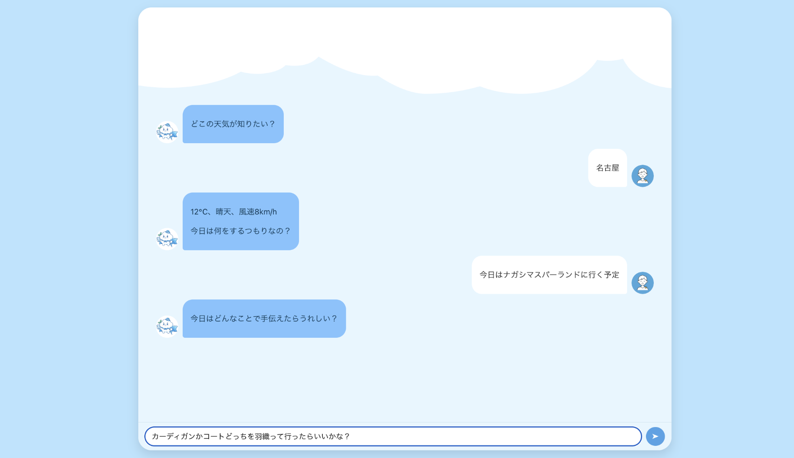
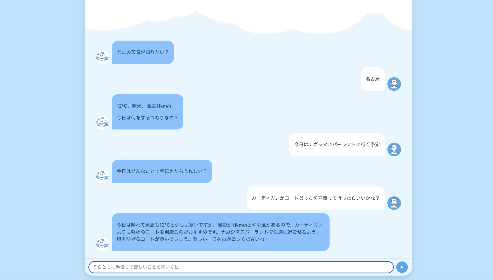

そらとも
天気と予定を入力すると、会話形式でアドバイスを返すWebアプリ
概要
「そらとも」は、ユーザーが入力した地名・予定・質問をもとに、 天気情報とAIによるアドバイスを一度に表示するWebアプリです。
本制作では、フロントエンド（React）を担当し、 入力のしやすさと結果の分かりやすさを重視してUIを設計しました。
画面イメージ




主な機能
- 地名をドロップダウンから選択（JSONで定義）
- 予定・質問をテキストで入力
- 天気情報（気温・天気・湿度・風速）の表示
- AIによるアドバイスをチャット形式で表示
技術構成
- Frontend：React
- Backend：Flask（API想定）
- 外部API：OpenWeatherMap API / OpenAI API
- 通信形式：JSON（POST）
工夫した点
- 地名・予定・質問を1つのフォームにまとめ、入力の手間を削減
- 天気結果とAIアドバイスを同時に表示し、画面遷移を不要にした
- 認証やDBを使わず、軽量で分かりやすい構成にした
担当範囲
フロントエンドのUI実装を担当しました。 バックエンドのAPI仕様を前提に、送受信するJSON構造を意識して実装しています。